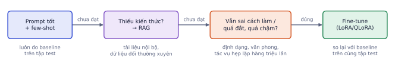
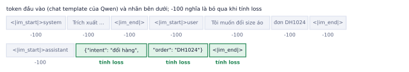
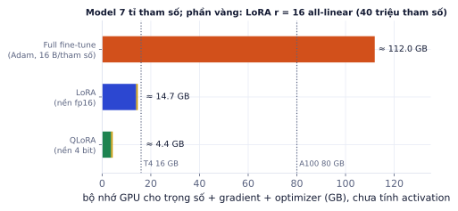

Bài 1
Tham số LoRA
tính tayModel có 24 lớp, d = 2048. LoRA r = 16 gắn vào q_proj và v_proj (mỗi cái 2048×2048).
Lời giải
16·4096 = 65.536 mỗi ma trận, 2 ma trận mỗi lớp, 24 lớp: 3.145.728, khoảng 3 triệu tham số train, so với hơn 1 tỉ của model.
Prompting và RAG giải quyết được phần lớn bài toán. Nhưng khi cần model nhỏ chạy rẻ cho một tác vụ hẹp, cần định dạng đầu ra rất ổn định, hay cần văn phong riêng, fine-tune là công cụ đúng. Bài này dạy khi nào nên fine-tune, supervised fine-tuning (SFT) cho LLM, cách làm với GPU nhỏ bằng LoRA/QLoRA (kèm tính bộ nhớ cụ thể), chuẩn bị dữ liệu dạng hội thoại, và các bẫy thường gặp.
"Có nên fine-tune không?" là câu khách hàng hỏi nhiều nhất về LLM, và câu trả lời đúng thường là "chưa". Biết khi nào không fine-tune giúp khách tiết kiệm hàng tuần và hàng nghìn đô; biết làm đúng khi cần thì bạn nhận được những dự án khó hơn, trả cao hơn.
Fine-tune thay đổi hành vi của model (cách làm, định dạng, văn phong), không phải cách tốt để nạp kiến thức mới. Thử theo thứ tự rẻ tới đắt:

| Vấn đề | Giải pháp đầu tiên nên thử |
|---|---|
| Model thiếu kiến thức (tài liệu nội bộ, dữ liệu mới) | RAG |
| Model không làm theo định dạng, văn phong | prompt tốt hơn, ví dụ few-shot, structured output |
| Tác vụ hẹp lặp lại hàng triệu lần, cần rẻ và nhanh | fine-tune model nhỏ |
| Prompt dài vài nghìn token chỉ để "dạy" cách làm | fine-tune để rút ngắn prompt |
| Cần hành vi mà prompt không ép được ổn định | fine-tune |
Một shop phân loại 300.000 tin nhắn khách mỗi ngày vào 8 nhóm (đổi hàng, hỏi giá, khiếu nại…). Đang dùng LLM lớn qua API với prompt 1.500 token gồm định nghĩa nhóm và 20 ví dụ.
Đây là trường hợp fine-tune đáng làm: tác vụ hẹp, lặp lại rất nhiều, prompt dài vì phải "dạy". Ngược lại, chatbot trả lời theo chính sách đổi mỗi tháng thì dùng RAG: fine-tune sẽ lỗi thời sau một tháng.
Luôn có baseline prompting (zero-shot, few-shot) đo trên cùng tập test trước. Fine-tune chỉ đáng khi vượt baseline rõ rệt.
SFT tiếp tục train model đã pretrain bằng đúng bài toán đoán token tiếp theo (P3.3), nhưng trên dữ liệu dạng (yêu cầu, câu trả lời mong muốn). Model "instruct" bạn dùng hằng ngày đã qua SFT trên hàng trăm nghìn ví dụ; bạn SFT thêm trên vài nghìn ví dụ của tác vụ của mình.
Mỗi model có định dạng hội thoại riêng, dùng token đặc biệt đánh dấu vai trò. Với Qwen:
<|im_start|>system
Trích xuất ý định và mã đơn từ tin nhắn. Chỉ trả JSON.<|im_end|>
<|im_start|>user
Tôi muốn đổi size áo đơn DH1024<|im_end|>
<|im_start|>assistant
{"intent": "đổi hàng", "order": "DH1024"}<|im_end|>
Llama, Gemma, Mistral dùng token khác. Luôn tạo chuỗi bằng tokenizer.apply_chat_template(messages, tokenize=False) thay vì tự ghép, để dữ liệu fine-tune có đúng định dạng model đã thấy lúc instruction-tune và lúc chạy thật.
Lệch template giữa train và chạy thật. Train bằng chuỗi tự ghép "### Câu hỏi: … ### Trả lời: …" rồi khi chạy lại dùng apply_chat_template (hoặc ngược lại) làm model fine-tune kém hẳn, đôi khi sinh lan man không dừng vì không học được token kết thúc <|im_end|>.
Phần system và user là đầu vào; model không cần học cách sinh ra chúng. Nếu tính loss trên cả chuỗi, phần lớn tín hiệu học là "chép lại câu hỏi".

Một ví dụ có 220 token prompt (system dài + tin nhắn) và 60 token câu trả lời. Nếu tính loss trên cả chuỗi, chỉ 60 / 280 ≈ 21% tín hiệu đến từ câu trả lời; 79% còn lại dạy model lặp lại system prompt.
Trong thư viện TRL (đã kiểm tra mã nguồn bản 1.17), cách đơn giản nhất là lưu dữ liệu dạng prompt / completion: với loại dữ liệu này SFTTrainer mặc định chỉ tính loss trên phần completion. Dữ liệu chỉ có cột messages thì mặc định tính loss trên toàn bộ chuỗi.
# một dòng trong train.jsonl, dạng prompt/completion hội thoại
{"prompt": [{"role": "system", "content": "Trích xuất ý định và mã đơn. Chỉ trả JSON."},
{"role": "user", "content": "Tôi muốn đổi size áo đơn DH1024"}],
"completion": [{"role": "assistant", "content": "{\"intent\": \"đổi hàng\", \"order\": \"DH1024\"}"}]}
Fine-tune toàn bộ với Adam (mixed precision) tốn khoảng 16 byte mỗi tham số: trọng số và gradient, cộng hai trạng thái Adam và bản sao trọng số fp32. Chưa tính activation (phụ thuộc độ dài chuỗi và batch).

Giống P5.5: đóng băng model, train hai ma trận mỏng B·A gắn vào các lớp Linear. Với LLM, gắn vào mọi lớp Linear trong attention (q, k, v, o) và MLP (gate, up, down) cho kết quả tốt hơn chỉ gắn vào q, v.
Qwen2.5-7B có 28 lớp, chiều ẩn 3584, MLP 18.944, k và v chiếu xuống 512 (do dùng grouped-query attention). LoRA r = 16 gắn vào 7 ma trận mỗi lớp:
| Ma trận | Kích thước | Tham số LoRA = 16 × (vào + ra) |
|---|---|---|
| q, o | 3584 → 3584 | 16 × 7168 = 114.688 mỗi cái |
| k, v | 3584 → 512 | 16 × 4096 = 65.536 mỗi cái |
| gate, up | 3584 → 18.944 | 16 × 22.528 = 360.448 mỗi cái |
| down | 18.944 → 3584 | 360.448 |
Mỗi lớp: 1.441.792; cả 28 lớp: khoảng 40,4 triệu tham số, tức 0,53% của 7,6 tỉ. Với 16 byte mỗi tham số train, phần LoRA cần khoảng 0,65 GB.
QLoRA (Dettmers và cộng sự, 2023) nạp model đóng băng ở 4 bit (định dạng NF4), giảm bộ nhớ trọng số gần 4 lần so với fp16. Khi tính toán, từng khối trọng số được giải nén tạm thời lên bf16/fp16; LoRA vẫn train ở độ chính xác cao. Chất lượng gần như bằng LoRA trên nền fp16, đổi lại chạy chậm hơn một chút vì phải giải nén.
| Tham số LoRA | Giá trị khởi đầu | Ghi chú |
|---|---|---|
| r | 8–32 | tác vụ phức tạp cần r lớn hơn |
| lora_alpha | 2·r | |
| lora_dropout | 0.05 | chống overfit nhẹ |
| target_modules | "all-linear" | tốt hơn chỉ q, v |
| learning rate | 1e-4 – 2e-4 | cao hơn full fine-tune khoảng 10 lần |
| epoch | 1–3 | nhiều hơn dễ overfit với tập nhỏ |
1.200 ví dụ, chia 80/10/10 → 960 train, 120 val, 120 test. Batch 8, gradient accumulation 2 (batch hiệu dụng 16):
Dữ liệu quyết định kết quả nhiều hơn mọi siêu tham số.
Rò rỉ test vào train. Sinh dữ liệu bằng LLM thường tạo ra các câu gần giống nhau. Chia train/test ngẫu nhiên thì những câu "anh em" nằm ở cả hai bên, điểm test cao giả tạo. Loại câu gần trùng (so khớp sau khi chuẩn hóa, hoặc embedding cosine rất cao) trước khi chia, hoặc chia theo nguồn/khách hàng.
| Bẫy | Dấu hiệu | Cách xử lý |
|---|---|---|
| Overfitting | loss train giảm mãi, loss val tăng; model lặp nguyên văn ví dụ train | giảm epoch, tăng dữ liệu, lấy checkpoint có val tốt nhất |
| Catastrophic forgetting | giỏi tác vụ mới nhưng trả lời câu hỏi chung kém hẳn | LoRA ít bị hơn full fine-tune; trộn 5–10% dữ liệu tổng quát; giảm lr |
| Đánh giá sai | chỉ nhìn loss | đo bằng metric của tác vụ (độ chính xác trường JSON, F1) trên test, so với baseline |
| Không dừng sinh | model sinh tiếp mãi sau câu trả lời | kiểm tra token kết thúc có trong completion và được tính loss |
Ghi nhớ: fine-tune dạy cách làm, RAG cung cấp kiến thức. Nhiều hệ thống tốt dùng cả hai.
| Chủ đề | Ý chính |
|---|---|
| Khi nào | prompt → RAG → fine-tune; luôn so với baseline trên cùng test |
| SFT | đoán token tiếp theo trên cặp (yêu cầu, câu trả lời) |
| Chat template | dùng apply_chat_template, giống lúc chạy thật |
| Loss mask | chỉ tính loss trên câu trả lời; TRL: dữ liệu prompt/completion |
| LoRA / QLoRA | train 0,5% tham số; nền 4 bit để vừa GPU nhỏ |
| Dữ liệu | sạch, đa dạng đầu vào, nhất quán đầu ra, chia trước, chống rò rỉ |
| Thuật ngữ | Nghĩa |
|---|---|
| SFT | supervised fine-tuning, fine-tune có giám sát |
| instruction tuning | SFT trên nhiều loại chỉ dẫn để model biết làm theo yêu cầu |
| chat template | định dạng hội thoại với token đặc biệt của từng model |
| loss masking (-100) | bỏ qua token khi tính loss |
| QLoRA | LoRA trên model nền lượng tử hóa 4 bit |
| NF4 | định dạng 4 bit "normal float" của QLoRA |
| gradient accumulation | cộng gradient nhiều batch nhỏ trước khi cập nhật |
| catastrophic forgetting | quên khả năng cũ khi học tác vụ mới |
| adapter | phần trọng số LoRA lưu riêng, gắn vào model nền |
Model có 24 lớp, d = 2048. LoRA r = 16 gắn vào q_proj và v_proj (mỗi cái 2048×2048).
16·4096 = 65.536 mỗi ma trận, 2 ma trận mỗi lớp, 24 lớp: 3.145.728, khoảng 3 triệu tham số train, so với hơn 1 tỉ của model.
Model 1,5 tỉ tham số (1 GB = 10⁹ byte).
fp16: 3 GB. 4 bit: 0,75 GB. Full fine-tune: 24 GB chưa tính activation, không vừa T4 16 GB. QLoRA: 0,75 GB trọng số + vài chục MB LoRA và trạng thái optimizer, vừa thoải mái.
Một ví dụ có 300 token prompt (system + user) và 100 token câu trả lời.
100/400 = 25%. Nếu tính loss trên cả 400 token, 75% tín hiệu học là "chép lại câu hỏi", không phải tác vụ bạn muốn.
Chọn giải pháp cho từng trường hợp và giải thích:
Chuyển một file CSV có cột text (email khách hàng) và json_label (đáp án trích xuất) thành file JSONL dạng messages cho SFT, có system prompt cố định. In ra một mẫu sau khi áp chat template của tokenizer.
import json, pandas as pd
from transformers import AutoTokenizer
SYSTEM = "Trích xuất ý định, mã đơn, sản phẩm và mức khẩn từ email khách hàng. Chỉ trả JSON."
df = pd.read_csv("emails.csv")
with open("train.jsonl", "w", encoding="utf-8") as f:
for _, r in df.iterrows():
f.write(json.dumps({"messages": [
{"role": "system", "content": SYSTEM},
{"role": "user", "content": r["text"]},
{"role": "assistant", "content": r["json_label"]},
]}, ensure_ascii=False) + "\n")
tok = AutoTokenizer.from_pretrained("Qwen/Qwen2.5-0.5B-Instruct")
sample = json.loads(open("train.jsonl", encoding="utf-8").readline())
print(tok.apply_chat_template(sample["messages"], tokenize=False))
Chọn một tác vụ hẹp, ví dụ trích xuất thông tin từ email khách hàng (dùng lại dữ liệu Lab 4), phân loại cảm xúc review, hoặc chuyển văn nói sang văn viết.
Các bước
SFTTrainer + LoRA (r 16, all-linear, lr 2e-4, 2–3 epoch). Lưu dữ liệu dạng prompt/completion (xem phần lý thuyết) để loss chỉ tính trên câu trả lời. Trên T4 dùng fp16; model 1.5B nạp 4 bit nếu thiếu bộ nhớ.Xong khi
from datasets import load_dataset
from peft import LoraConfig
from trl import SFTTrainer, SFTConfig
ds = load_dataset("json", data_files={"train": "train.jsonl", "validation": "val.jsonl"})
peft_cfg = LoraConfig(r=16, lora_alpha=32, lora_dropout=0.05, target_modules="all-linear", task_type="CAUSAL_LM")
args = SFTConfig(output_dir="qwen-extract-lora", num_train_epochs=3, per_device_train_batch_size=8,
gradient_accumulation_steps=2, learning_rate=2e-4, lr_scheduler_type="cosine", warmup_ratio=0.05,
logging_steps=10, eval_strategy="epoch", save_strategy="epoch", fp16=True, report_to="none")
trainer = SFTTrainer(model="Qwen/Qwen2.5-0.5B-Instruct", args=args, train_dataset=ds["train"],
eval_dataset=ds["validation"], peft_config=peft_cfg)
trainer.train()
trainer.save_model("qwen-extract-lora")